Chapter 5: Building the Patient Journey: Treatment Patterns, Lines of Therapy, and Persistence
Chapter 4 estimated 8.1 million diagnosed, age-eligible, untreated patients and 1.0 million expected Roventra starts under the access and conversion assumptions. The launch team now needs to convert that opportunity into an operating plan. They need to know when treatment starts occur, which products patients start, how often treatment changes, where access delays appear, and how long patients remain on therapy.
Those answers affect the demand ramp, supply requirements, patient-support staffing, treatment-mix reporting, and the evidence sent to brand, market access, and field teams. A wrong journey rule can change those decisions. In this chapter, a naive line-of-therapy analysis reports 3,193 Roventra line-1 entries. A 180-day washout identifies 395 of them as continuing users, leaving 2,798 newly observed Roventra starts. The naive result overstates new starts by 14.1%.
By the end of the chapter, you will build a diagnosis-indexed cohort, distinguish treatment fills from access signals, construct and test line-of-therapy rules, estimate time to treatment with censoring and competing events, measure persistence and adherence, and trace access outcomes through the hub. The final artifact is a journey evidence package that connects each commercial result to its cohort, observation window, calculation rule, and data boundary.
Before running any chapter listing, execute uv run python ch05_journey/scripts/run_analysis.py from the repository root. The script writes the journey evidence package to ch05_journey/assets/generated_outputs: cohort attrition, treatment episodes, line-of-therapy records, washout comparisons, initiation and persistence curves, adherence records, hub outcomes, and the rule-sensitivity grid. Every analysis below reads from those files. Run uv run python ch05_journey/scripts/build_figures.py to rebuild the figures, or open chapter5_walkthrough.ipynb to execute the chapter as one sequence.
5.1 Define the Journey
Before we measure treatment patterns, we have to define the cohort, the index event, the treatment evidence, and the observation window.
The cohort follows the new-user design from pharmacoepidemiology (Ray, 2003). We take the first qualifying diagnosis that appears during the patient's observable coverage as the index event, then require 180 covered days before that date so we can look back through the enrollment window for earlier qualifying diagnoses. In this chapter, patient journey and line-of-therapy analyses also require at least 90 observable days after index so treatment patterns have enough time to appear, while time-to-treatment analysis does not have that requirement.
Note 1: 180 days look back is a common default in claims-based new-user studies, especially for chronic therapies. People also use 90 days when the refill cycle is short, or 365 days when they want a stricter washout and have enough history. 180 days is a middle ground because it is long enough to catch prior basket fills and still leaves enough patients in the cohort.
Note 2: 90 observable days works here because you need enough post-index time to see initiation and early treatment patterns, while still keeping a usable cohort size. Some studies use 30, 60, 90, or 180 days depending on the therapy.
Listing 5.1: Build the diagnosis-indexed journey cohort
import sys
from pathlib import Path
sys.path.insert(0, "ch05_journey/scripts")
from episode_construction import (
build_newly_observed_cohort,
load_chapter3_data,
prepare_pharmacy_events,
)
tables = load_chapter3_data(Path("ch03_data/output_data/generated_data"))
cohort, attrition = build_newly_observed_cohort(
tables,
minimum_lookback_days=180,
minimum_followup_days=90,
)
print(attrition.to_string(index=False))
stage patients rule
Patients in source population 20000 One row in the patient reference table
Observed qualifying diagnosis 8213 At least one encounter with ICD prefix E11.9|E11.65|E11.40
Sufficient lookback 6562 At least 180 covered days before index
Analysis cohort 5637 Lookback plus at least 90 observable days after index
The panel in figure 5.1 shows 3 real patients in synthetic dataset. Each has a qualifying diagnosis, but only one has both 180 days of history before index and 90 days of observable time after it. Blue marks qualifying lookback before index, and green marks qualifying follow-up after index. Red marks lookback that is too short, and gold marks follow-up that is too short.
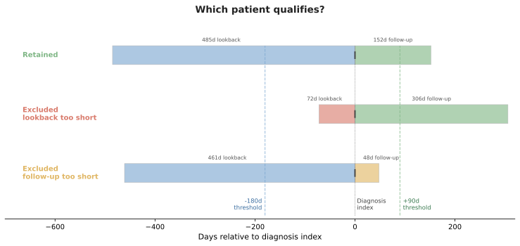
Figure 5.1. Cohort entry depends on observable time around the diagnosis index.
5.2 Lines of Therapy: Building the Treatment Sequence
The launch team uses line-of-therapy analysis to report newly observed starts, first-line treatment mix, regimen changes, and movement to later therapy. These results feed uptake reporting, competitive analysis, demand planning, and investigations of switching or discontinuation. Their meaning depends on the rules used to convert pharmacy fills into treatment lines.
Roventra line 1 begins with the first qualifying treatment fill after diagnosis. Building the sequence requires explicit rules for prior-treatment washout, the starting-regimen window, refill gaps, additions, switches, restarts, discontinuation, and censoring. This section applies those rules to synthetic claims data and shows how the washout rule changes the reported Roventra new-start count.
5.2.1 The washout rule
Before sequencing lines, we need to decide which fills count as a true new start and which are continuing therapy. The 180-day washout answers that question: if the patient had a treatment-basket fill in the 180 days before their post-diagnosis fill, they are not a new start.
The washout window is anchored to the first treatment fill, not the diagnosis date. The section 5.1 lookback (also 180 days) counts back from the diagnosis date to confirm the patient is newly diagnosed within observable history. The washout counts back from the first fill to confirm the patient is newly started on therapy. A patient who began Roventra months before diagnosis will pass the diagnosis lookback but fail the washout: their pre-diagnosis fills land inside the 180-day window before their "first" post-diagnosis refill, revealing the continuation.
Roventra shows 3,193 line-1 entries without the washout rule, 2,798 with it. The 395 patients in between had a basket fill in the 180 days before their post-diagnosis "first" fill; they are therapy continuing users who got relabeled as a new start.
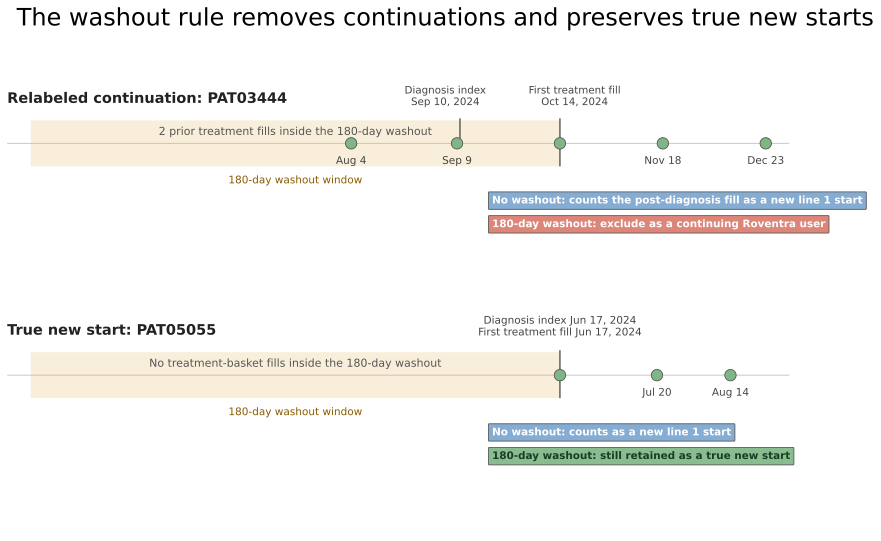
Figure 5.2. The washout rule. The top panel shows a post-diagnosis fill that looks like a new start only because earlier treatment fills are hidden by a no-washout view. The bottom panel shows a patient with no earlier treatment fills, keep in the cohort.
5.2.2 The rule set
Figure 5.3 illustrates a set of treatment sequence rules.
- New line start (panel 1): line
1starts at the first treatment-basket fill after diagnosis, after the patient passes the 180-day washout. A 28-day supply covers days 0 through 27. - Same-line refill (panel 2): a refill before the allowable 60-day gap closes keeps the patient on the
same line. - Starting combination (panel 3): product B inside the 30-day regimen window joins the starting regimen, so line
1becomesA + B. - Addition (panel 4): product B after the 30-day window but while product A still has active supply advances to line
2,A + B. - Switch (panel 5): product B after product A supply has ended advances to line
2,B. - Restart (panel 6): the same product after the 60-day gap closes opens a
new lineon the same product. - Censoring (panel 7): observation ending before the gap can be resolved leaves the line censored.
- Discontinuation (panel 8): the 60-day gap closes while the patient is still observable and no qualifying refill, switch, addition, or restart appears.
Each rule is coded in ch05_journey/scripts/lot.py.
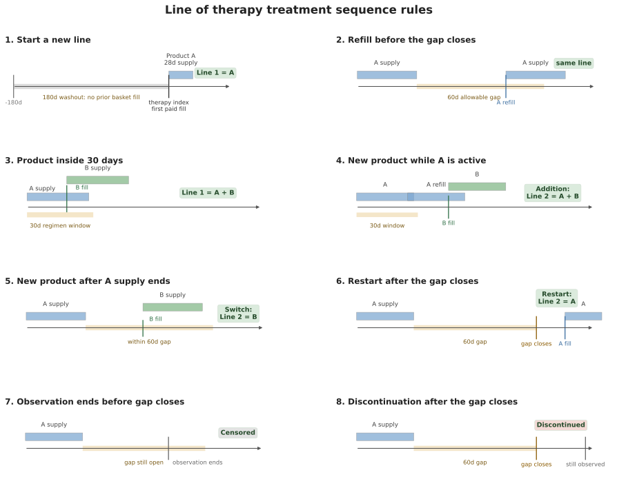
Figure 5.3. Line-of-therapy rules depend on the timing of fills, active supply, the regimen window, the allowable gap, and the observation boundary. Conceptual schematic.
5.2.3 Switch example
PAT00839 is a new-to-therapy patient whose 2nd line is entered by a switch and ends in a discontinuation. The 180-day lookback cohort filter is already satisfied for the LOT analysis. The line logic then begins at the first treatment fill after that diagnosis date.
Listing 5.2: Trace a switch from transactions to lines of therapy
import pandas as pd
from episode_construction import DX_COLS, LAUNCH_CONDITION_CODES
out = "ch05_journey/assets/generated_outputs"
patient_id = "PAT00839"
medical = tables["medical_claims"]
pharmacy = tables["pharmacy_claims"]
basket = tables["products"]["product_name"].tolist()
diagnosis_index = (
medical.loc[
medical.patient_id.eq(patient_id)
& medical[DX_COLS].isin(set(LAUNCH_CONDITION_CODES)).any(axis=1),
"claim_date",
]
.min()
)
mine = pharmacy[
pharmacy.patient_id.eq(patient_id) & pharmacy.product_name.isin(basket)
].sort_values("date_of_service")
therapy_index = mine.loc[mine.transaction_type.eq("PAID"), "date_of_service"].min()
print(
f"{patient_id}, diagnosis index {diagnosis_index:%Y-%m-%d}, "
f"therapy index {therapy_index:%Y-%m-%d}:"
)
print(mine[["date_of_service", "product_name", "days_supply", "transaction_type"]]
.to_string(index=False))
lines = pd.read_csv(f"{out}/lines.csv")
cols = ["line_number", "regimen", "line_start", "line_end",
"fill_count", "entry_reason", "end_reason", "line_days"]
print("\nlines of therapy:")
print(lines.loc[lines.patient_id.eq(patient_id), cols].to_string(index=False))
PAT00839, diagnosis index 2024-01-26, therapy index 2024-06-20:
date_of_service product_name days_supply transaction_type
2024-06-20 Nexoral 30 PAID
2024-07-22 Vexpro 30 PENDED
2024-07-24 Vexpro 30 PAID
2024-08-21 Vexpro 30 PAID
lines of therapy:
line_number regimen line_start line_end fill_count entry_reason end_reason line_days
1 Nexoral 2024-06-20 2024-07-19 1 Initial therapy Switch 30
2 Vexpro 2024-07-24 2024-09-19 2 Switch Discontinued 58
The diagnosis index comes from the earliest qualifying diagnosis claim for the launch condition. The therapy index is the first treatment fill on or after that diagnosis date. For PAT00839, diagnosis is on 2024-01-26 and treatment begins on 2024-06-20, 146 days later.
Nexoral is the 1st line since he passes the washout. The Nexoral supply runs through 2024-07-19. The Vexpro fill arrives 2024-07-24, within the 60-day allowable gap and after the Nexoral supply has ended, so it is a line 2 switch to Vexpro regimen. Two Vexpro fills carry supply to 2024-09-19. His observation window runs to 2024-12-31, more than 60 days past his last supplied day, so the discontinuation rule applies here: line 2 ended on therapy day 58.
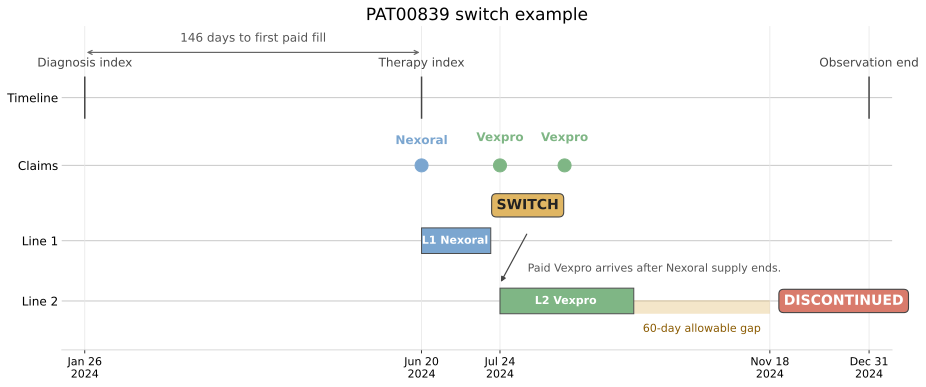
Figure 5.4. PAT00839 shows the switch rule. The diagnosis index anchors the cohort, the first Nexoral fill sets the therapy index, the Vexpro fill creates the switch, and the observation window extends past the 60-day gap so discontinuation is observed. Synthetic data.
5.2.4 Addition example
PAT03874, the first new-to-therapy patient, demonstrated the 2nd line therapy addition rule.
Listing 5.3: Trace an addition from transactions to lines of therapy
import pandas as pd
from episode_construction import DX_COLS, LAUNCH_CONDITION_CODES
out = "ch05_journey/assets/generated_outputs"
patient_id = "PAT03874"
medical = tables["medical_claims"]
pharmacy = tables["pharmacy_claims"]
basket = tables["products"]["product_name"].tolist()
diagnosis_index = (
medical.loc[
medical.patient_id.eq(patient_id)
& medical[DX_COLS].isin(set(LAUNCH_CONDITION_CODES)).any(axis=1),
"claim_date",
]
.min()
)
mine = pharmacy[
pharmacy.patient_id.eq(patient_id) & pharmacy.product_name.isin(basket)
].sort_values("date_of_service")
therapy_index = mine.loc[mine.transaction_type.eq("PAID"), "date_of_service"].min()
print(
f"{patient_id}, diagnosis index {diagnosis_index:%Y-%m-%d}, "
f"therapy index {therapy_index:%Y-%m-%d}:"
)
print(mine[["date_of_service", "product_name", "days_supply", "transaction_type"]]
.to_string(index=False))
lines = pd.read_csv(f"{out}/lines.csv")
cols = ["line_number", "regimen", "line_start", "line_end",
"fill_count", "entry_reason", "end_reason", "line_days"]
print("\nlines of therapy:")
print(lines.loc[lines.patient_id.eq(patient_id), cols].to_string(index=False))
PAT03874, diagnosis index 2024-05-09, therapy index 2024-07-06:
date_of_service product_name days_supply transaction_type
2024-06-28 Vexpro 60 PENDED
2024-07-06 Vexpro 60 PAID
2024-08-29 Nexoral 60 PAID
2024-11-03 Nexoral 60 PAID
lines of therapy:
line_number regimen line_start line_end fill_count entry_reason end_reason line_days
1 Vexpro 2024-07-06 2024-09-03 1 Initial therapy Addition 60
2 Nexoral + Vexpro 2024-08-29 2025-01-01 2 Addition Censored 126
The same cohort logic applies here. PAT03874 already met the 180-day lookback requirement before entering the line analysis. PAT03874 starts a 60-day Vexpro fill, and on 2024-08-29, while that supply is still active but after the 30-day regimen window has closed, Nexoral arrives. A new product on a live backbone is an addition: the line advances to line 2 and the regimen becomes the combination Nexoral + Vexpro. Had the Nexoral fill landed within the first 30 days, it would have joined line 1 as a combination instead. Whether an addition should advance the line depends on the therapeutic area. Oncology consider as line advance, while some chronic-disease consider it's not. His line 2 is censored because supply runs past the observation boundary.

Figure 5.5. PAT03874 shows the addition rule. The first Vexpro fill sets the therapy index, the 30-day regimen window closes on 2024-08-05, Nexoral arrives later while Vexpro still has active supply, and the line advances to Nexoral + Vexpro. Observation ends before the regimen can be classified as discontinued, so line 2 is censored. Synthetic data.
5.2.5 Cohort treatment pattern
Run the treatment sequence rules over all 3,415 new-to-therapy patient cohort:
Listing 5.4: Summarize line-of-therapy patterns and the washout effect
import pandas as pd
out = "ch05_journey/assets/generated_outputs"
lines = pd.read_csv(f"{out}/lines.csv")
print("patients by deepest line reached:",
lines.groupby("patient_id").line_number.max().value_counts().sort_index().to_dict())
print("how lines are entered:", lines.entry_reason.value_counts().to_dict())
print("how lines end: ", lines.end_reason.value_counts().to_dict())
print("\nline-1 regimens:")
print(pd.read_csv(f"{out}/lot_line1_summary.csv").to_string(index=False))
print("\nRoventra line entries, with and without the washout rule:")
base = pd.read_csv(f"{out}/lot_entry_shares.csv").assign(rule="180-day washout")
naive = pd.read_csv(f"{out}/lot_entry_shares_naive.csv").assign(rule="no washout")
print(pd.concat([naive, base])[["rule", "position", "line_entries", "share"]]
.to_string(index=False))
patients by deepest line reached: {1: 3387, 2: 28}
how lines are entered: {'Initial therapy': 3415, 'Switch': 24, 'Addition': 4}
how lines end: {'Censored': 1938, 'Discontinued': 1477, 'Switch': 24, 'Addition': 4}
line-1 regimens:
regimen patients median_line_days discontinued_share
Roventra 2798 59.0 0.434
Vexpro 309 67.0 0.443
Nexoral 303 66.0 0.356
Nexoral + Vexpro 5 58.0 0.600
Roventra line entries, with and without the washout rule:
rule position line_entries share
no washout Line 1 3193 1.0
180-day washout Line 1 2798 1.0
Given that the synthetic data's date range is from 2024-01-01 to 2025-01-31, with this limited bounded observation, the LoT depth is shallow: 3,387 of 3,415 treated patients never leave line 1, and 28 reach a second line. Lines advance by switch (24) and addition (4), and 0.1% of first-line regimens are combinations. Restarts are absent because this generator builds tight refill chains. In real data, vacations, hospitalizations, mail-order fills, and incomplete capture make restart logic much more important. Roventra is the most common observed first-line regimen in this synthetic data.
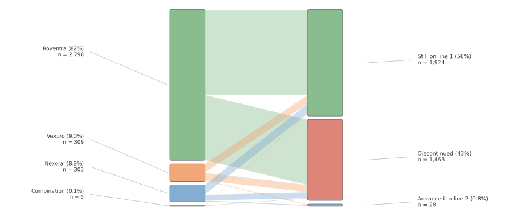
Figure 5.6. The Sankey keeps first-line regimens on the left; still on line 1, discontinued, or advanced to line 2 on the right. Synthetic data.
5.2.6 Apply the treatment sequence to commercial reporting
The 180-day washout identifies 3,415 new-to-therapy patients. Roventra appears in the first-line regimen for 2,798 of them. Without the washout, the analysis reports 3,193 Roventra line-1 entries because it counts 395 continuing users as new starts. The uncorrected count is 14.1% higher than the corrected result.
That difference affects 3 commercial outputs. The uptake report needs the corrected 2,798 newly observed Roventra starts. The treatment-mix report needs first-line regimens built under the same washout and regimen-window rules. The demand forecast needs new starts separated from continuing refills because the 2 groups create different expectations for launch growth.
Only 28 of the 3,415 treated patients reach line 2 during the available observation period: 24 through switches and 4 through additions. These counts are sufficient for checking patient traces and validating the sequence rules. They are too small for payer-, account-, or product-level conclusions about later-line behavior.
First-line product shares can be summarized by payer once minimum cell-size rules are met. Those descriptive differences raise a formulary-position question for Chapter 6. A payer-effect claim would require adjustment for patient mix, channel capture, and benefit design.
The commercial deliverable should include the following fields:
- 3,415 newly observed treated patients
- 2,798 Roventra first-line starts
- first-line regimen counts and shares
- 24 switches and 4 additions
- diagnosis and treatment index definitions
- 180-day washout
- 30-day starting-regimen window
- 60-day allowable gap
- observation window and data cutoff
- sensitivity results for rules that materially change the output (we do not yet cover this due to space limitations)
The corrected new-start count can enter uptake and demand planning. The later-line results remain method-validation findings until more follow-up produces adequate counts.
When these results are reported by payer, region, or account band, the deliverable should enforce minimum cell sizes and attach the observation window and rule version. Patient-level histories stay within the validation record. Stakeholder outputs use the approved aggregate grain.
5.3 Time to Treatment: When Patients Start Therapy
The launch team needs to know how quickly diagnosed patients become treated patients. That answer feeds demand forecasting, capacity planning, supply planning, and patient-support staffing. It also leads to more useful questions: How long do patients wait? Where does the delay build up? Which HCPs start therapy faster? Does prior authorization add 10 days or 60? Which payer plans create the longest access delay?
The full path can include symptoms, diagnosis, biomarker testing, a treatment decision, a prescription, prior authorization, and the first treatment fill. A single diagnosis-to-treatment number captures the total delay, but it hides where that delay comes from. Stage-level timings point to the step that a testing program, field reimbursement manager, nurse navigator, HCP education effort, or patient-support program can actually change.
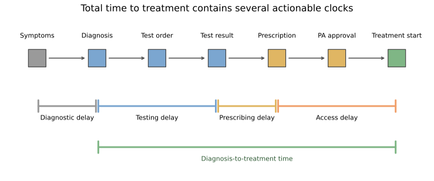
Figure 5.7. The total time to treatment contains several operational clocks. This chapter measures diagnosis to treatment start. The other clocks require their own dated events.
Note: The synthetic datasets in this chapter contain diagnosis dates and first treatment dates. To split delay across testing, physician decision, or payer review, we would also need biomarker order dates, result dates, prescription dates, and prior-authorization dates. Those fields are not included in this section.
Table 5.1. Choose the clock that matches the decision.
| Clock | Business question | Required dated events | Possible action |
|---|---|---|---|
| Symptoms to diagnosis | Is diagnosis coming too late? | Symptom onset and confirmed diagnosis | Referral and disease awareness |
| Diagnosis to biomarker result | Is testing adding delay? | Diagnosis, test order, and result | Testing access and specimen workflow |
| Result to prescription | Is the treatment decision slowing down? | Result and prescription | HCP education and care-pathway review |
| Prescription to PA approval | How much delay does payer review add? | Prescription, PA submission, and approval | Reimbursement support and documentation |
| PA approval to treatment start | Do approved patients actually reach therapy? | Approval and pharmacy fill or shipment | Patient support and fulfillment follow-up |
| Diagnosis to treatment start | How quickly do diagnosed patients become treated patients? | Diagnosis and pharmacy fill | Forecasting, capacity planning, and delay screening |
5.3.1 Why naive average fails
All 5 patients in Table 5.2 were diagnosed on January 1. The data close on day 90. Patients A, B, and C start treatment. Patients D and E remain observable through the cutoff without a recorded treatment start. The cutoff can be caused by administrative study completion, end of data availability, or loss of captured coverage.
Table 5.2. Each patient is a record with a observed duration and a treatment or censored outcome.
| Patient | Last observed day | Outcome | Time to treatment |
|---|---|---|---|
| A | 19 | Treated | 19 days |
| B | 31 | Treated | 31 days |
| C | 59 | Treated | 59 days |
| D | 90 | Censored | > 90 days |
| E | 90 | Censored | > 90 days |
The treated-only mean is (19+31+59)/3 = 36.3 days, and the treated-only median is 31 days. Both calculations drop D and E, even though each one remained untreated for 90 days, longer than any treated patient in the example. If both had started exactly on day 90, just before the observation window closed, each would add 90 days to the average and the mean would become (19+31+59+90+90)/5 = 57.8 days. The median would then move to 59 days.
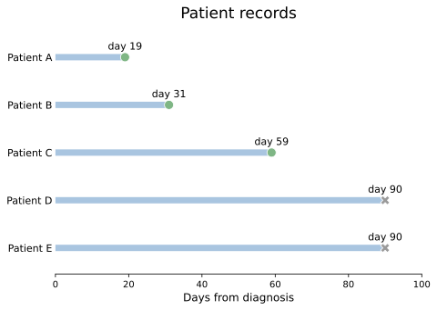
Figure 5.8. Patients D and E contribute untreated follow-up through day 90. Their censoring marks end observation, with no recorded treatment event. Conceptual example.
5.3.2 Build Kaplan-Meier intuition
Start with all 5 patients untreated. Patients A, B, and C start treatment on days 19, 31, and 59. Patients D and E stay in the untreated risk set until day 90, when follow-up ends and we censor them.
Table 5.3. The Kaplan-Meier calculation changes the denominator as patients leave the untreated risk set.
| Day | At risk just before day | Treatment events | Censored | Conditional fraction still untreated | Probability still untreated, \(\hat S(t)\) | Cumulative initiation, \(1-\hat S(t)\) |
|---|---|---|---|---|---|---|
| 0 | 5 | 0 | 0 | 1 | 1 | 0 |
| 19 | 5 | 1 | 0 | \(1-1/5=4/5\) | \(1\times4/5=4/5\) | \(1-4/5=1/5\) |
| 31 | 4 | 1 | 0 | \(1-1/4=3/4\) | \(4/5\times3/4=3/5\) | \(1-3/5=2/5\) |
| 59 | 3 | 1 | 0 | \(1-1/3=2/3\) | \(3/5\times2/3=2/5\) | \(1-2/5=3/5\) |
| 90 | 2 | 0 | 2 | 1 | \(2/5\) | \(3/5\) |
Note: In this table, at risk means a patient is still being observed, has not started treatment yet, and could still start on that day. The term can feel unintuitive because it comes from survival analysis, where a patient is "at risk" of death or relapse. Here, the event is treatment start. So the at-risk group is just the patients who are still untreated and observable right before that day.
Patients D and E keep the denominators larger at days 19, 31, and 59 because we have already watched them stay untreated up to those points. The denominator counts only the patients who are still observable and still eligible to start. At day 90, D and E are censored. Since no treatment occurs, the curve stays at \(2/5\).
The repeated multiplication in Table 5.3 is the Kaplan-Meier estimator (Kaplan and Meier, 1958):
At treatment time \(t_i\), \(n_i\) is the risk set and \(d_i\) is the number of treatment starts. In this analysis, the statistical term survival function means the probability of remaining untreated. The initiation curve is its complement:
The Kaplan-Meier median is the first observed day when \(\hat S(t)\leq0.50\). The curve stays at \(3/5\) after day 31 and drops to \(2/5\) on day 59. The median is the observed crossing time: day 59.
Listing 5.5: Reproduce the 5-patient calculation
import pandas as pd
from survival import km_curve, km_median
toy = pd.DataFrame({"day": [19, 31, 59, 90, 90],
"treated": [True, True, True, False, False]})
observed = toy.loc[toy.treated, "day"]
curve = km_curve(toy.day, toy.treated)
print(f"treated-only mean: {observed.mean():.1f} days")
print(f"treated-only median: {observed.median():.0f} days")
print(f"Kaplan-Meier median: {km_median(curve):.0f} days")
print(curve[["day", "at_risk", "events", "censored", "survival", "cumulative_initiation"]]
.round(3).to_string(index=False))
treated-only mean: 36.3 days
treated-only median: 31 days
Kaplan-Meier median: 59 days
day at_risk events censored survival cumulative_initiation
0 5 0 0 1.0 0.0
19 5 1 0 0.8 0.2
31 4 1 0 0.6 0.4
59 3 1 0 0.4 0.6
90 2 0 2 0.4 0.6
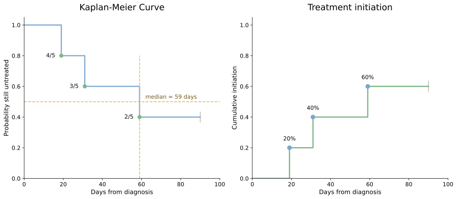
Figure 5.9. The 2 panels show the same 5 patient histories from 2 angles. When treatment starts, the Kaplan-Meier curve falls while the cumulative initiation curve rises. Censoring on day 90 leaves both curves flat and ends follow-up.
5.3.3 Apply Kaplan-Meier to cohort
Listing 5.1 identified 6,562 patients with at least 180 days of observable history before their diagnosis index. For time to treatment, 169 of those patients cannot enter the analysis because their diagnosis dates occur after the December 31, 2024 study cutoff. They provide no post-diagnosis time within the study. Removing them creates the 6,393-patient treatment-initiation cohort.
This cohort does not require 90 days of follow-up after diagnosis. That requirement was used to build the 5,637-patient journey and line-of-therapy cohort in Section 5.1. Applying it here would remove recently diagnosed patients. Kaplan-Meier keeps them and uses the follow-up available for each patient.
By the end of each patient's available record, 4,110 of the 6,393 patients had an observed treatment start and 2,283 did not. Therefore 35.7% has no observed treatment start. But this is not an estimate of the share who will remain untreated because we don't know what happend afterwards. Kaplan-Meier uses the available follow-up time for all 6,393 patients, just as it did for Patients D and E in the 5-patient example.
Listing 5.6: Compare the end-of-study count with the time-to-event result
import pandas as pd
out = "ch05_journey/assets/generated_outputs"
journeys = pd.read_csv(f"{out}/initiation_journeys.csv")
treated = journeys[journeys.initiated_treatment]
curve = pd.read_csv(f"{out}/initiation_curve.csv")
median_day = curve.loc[curve.cumulative_initiation.ge(0.5), "day"].iloc[0]
print(f"end-of-study count: {len(treated):,} of {len(journeys):,} started; "
f"{1 - journeys.initiated_treatment.mean():.1%} without observed start")
print(f"treated-only median: {treated.days_to_treatment.median():.0f} days")
print(f"Kaplan-Meier median: {median_day:.0f} days")
for day in (90, 180, 270):
row = curve.loc[curve.day.le(day)].iloc[-1]
print(f"day {day}: {row.cumulative_initiation:.1%} "
f"(95% CI {row.cumulative_initiation_lower_95:.1%} to "
f"{row.cumulative_initiation_upper_95:.1%}); {int(row.at_risk):,} at risk")
end-of-study count: 4,110 of 6,393 started; 35.7% without observed start
treated-only median: 104 days
Kaplan-Meier median: 168 days
day 90: 30.5% (95% CI 29.4% to 31.7%); 3,957 at risk
day 180: 52.9% (95% CI 51.6% to 54.3%); 2,142 at risk
day 270: 74.3% (95% CI 72.9% to 75.6%); 722 at risk
The treated-only median answers a conditional question about the 4,110 observed starters. The Kaplan-Meier median uses the untreated follow-up contributed by all 6,393 patients and estimates when cumulative initiation reaches 50%.
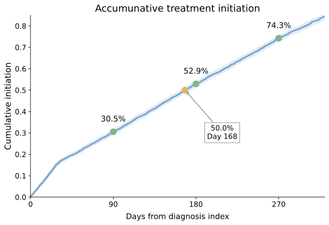
Figure 5.10. Initiation continues to accrue as the untreated risk set becomes smaller. The shaded band is the 95% confidence interval. Synthetic data.
5.3.4 Aalen-Johansen: account for death before treatment
Now change Patient B's outcome in the 5-patient example. Patient B dies on day 31 before starting treatment. Death is a competing event because it prevents treatment from occurring later.
Note: The chapter's synthetic cohort does not include death records. In a real study, death dates may come from linked EHR data, mortality registries, obituary-based mortality sources, or other linked records.
Suppose we treat Patient B's death as ordinary censoring. Kaplan-Meier removes Patient B from the risk set on day 31 without recording a treatment event. Patient C then starts treatment on day 59, when 3 patients remain at risk.
Table 5.4. Kaplan-Meier treats Patient B's death as censoring and continues to estimate treatment initiation among the remaining risk set.
| Day | At risk just before day | Treatment events | Censored | Conditional fraction still untreated | Probability still untreated, \(\hat S(t)\) | Cumulative initiation, \(1-\hat S(t)\) |
|---|---|---|---|---|---|---|
| 0 | 5 | 0 | 0 | 1 | 1 | 0 |
| 19 | 5 | 1 | 0 | \(1-1/5=4/5\) | \(1\times4/5=4/5\) | \(1-4/5=1/5=20\%\) |
| 31 | 4 | 0 | 1 | 1 | \(4/5\) | \(1/5=20\%\) |
| 59 | 3 | 1 | 0 | \(1-1/3=2/3\) | \(4/5\times2/3=8/15\) | \(1-8/15=7/15=46.7\%\) |
| 90 | 2 | 0 | 2 | 1 | \(8/15\) | \(7/15=46.7\%\) |
Compare Table 5.4 with Table 5.3. Replacing Patient B's treatment with death removes the treatment event on day 31. Kaplan-Meier records only that Patient B left the risk set. Its estimated cumulative treatment initiation reaches \(7/15\), or 46.7%, by day 90.
The 46.7% estimate answers a hypothetical question: what would treatment initiation look like if deaths were removed and the patients who died had the same subsequent initiation pattern as comparable patients who remained observable? It overestimates the real-world probability of treatment in this example because a patient who dies before treatment can never start treatment later.
Aalen-Johansen records treatment and death as separate outcomes (Aalen and Johansen, 1978). For each outcome, it estimates a cumulative incidence function (CIF), the probability that the outcome has occurred by day \(t\), accounting for the other event that could occur first.
Table 5.5. Aalen-Johansen assigns probability to treatment, death, or remaining untreated and alive.
| Day | Event | At risk | Treatment increment | Death increment | Treated probability | Death probability | Untreated and alive |
|---|---|---|---|---|---|---|---|
| 0 | Start | 5 | \(0\) | \(0\) | 0% | 0% | 100% |
| 19 | A treated | 5 | \(1\times1/5=1/5\) | \(0\) | 20% | 0% | 80% |
| 31 | B died | 4 | \(0\) | \(4/5\times1/4=1/5\) | 20% | 20% | 60% |
| 59 | C treated | 3 | \(3/5\times1/3=1/5\) | \(0\) | 40% | 20% | 40% |
| 90 | D and E censored | 2 | \(0\) | \(0\) | 40% | 20% | 40% |
At every row, the 3 state probabilities sum to 100%. By day 90, the estimated probability of treatment is 40%, the probability of death before treatment is 20%, and the probability of remaining untreated and alive is 40%. The treatment cumulative incidence never reaches 50%, so a median treatment-initiation time is not reached in this example.
Listing 5.7: Calculate the competing-risk probabilities
import pandas as pd
from survival import aalen_johansen_curve
days = pd.Series([19, 31, 59, 90, 90])
outcomes = pd.Series(["Treated", "Died", "Treated", "Censored", "Censored"])
aj = aalen_johansen_curve(days, outcomes)
cols = ["day", "at_risk", "event_free", "cumulative_interest",
"cumulative_competing"]
print(aj[cols].round(3).to_string(index=False))
day at_risk event_free cumulative_interest cumulative_competing
0 5 1.0 0.0 0.0
19 5 0.8 0.2 0.0
31 4 0.6 0.2 0.2
59 3 0.4 0.4 0.2
90 2 0.4 0.4 0.2
The numeric pattern leads to the general treatment cumulative incidence formula:
\(\hat S_{\text{all events}}(t_i^-)\) is the probability still untreated and free of a competing event immediately before day \(t_i\). The fraction \(d_{i,\text{treatment}}/n_i\) assigns part of that available probability to treatment. A parallel calculation assigns probability to death.
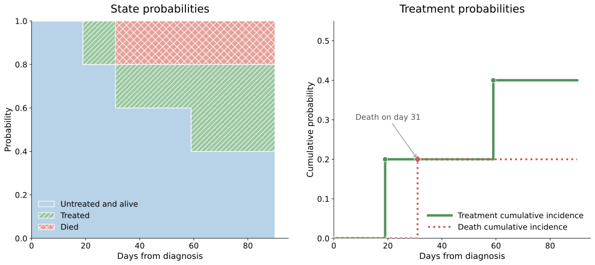
Figure 5.11. The state-probability panel shows how all 3 patient states continue to sum to 100% while the cumulative incidence curves separate treatment from death.
The event definition must follow the business question. Administrative data cutoff is censoring because treatment could occur later. Death before treatment is a competing event because it makes later treatment impossible. Insurance disenrollment requires a protocol decision: it may be censoring for treatment anywhere in the health system, or the end of eligibility when the estimand is treatment within the captured plan.
5.3.5 Apply the initiation curve to commercial planning
The 6,393-patient cohort provides 4 measured planning points. The Kaplan-Meier median time to treatment is 168 days. Cumulative initiation reaches 30.5% by day 90, 52.9% by day 180, and 74.3% by day 270.
These estimates describe when treatment starts accumulate after diagnosis. A forecast team can apply them to a separate diagnosis forecast. If the forecast expects \(N\) comparable diagnoses, the estimated starts by day \(t\) are:
The diagnosis forecast supplies \(N\). The treatment-initiation analysis supplies \(\hat F_{\text{initiation}}(t)\). The 2 inputs should remain separate because they come from different evidence.
| Commercial question | What the current analysis shows | Required next step |
|---|---|---|
| How long do patients wait after diagnosis? | Median time to treatment is 168 days. Initiation reaches 30.5% by day 90, 52.9% by day 180, and 74.3% by day 270. | Use the curve with the diagnosis forecast to phase expected starts, supply, and support capacity. |
| During which period do starts accumulate? | Initiation increases by 22.4 percentage points between days 90 and 180. | Check whether staffing and fulfillment capacity match this period. |
| Where does the delay occur? | Does not separate testing, treatment-decision, and payer-review time. | Add the stage dates in Table 5.1 and estimate each interval separately. |
| Do HCP initiation patterns differ? | Does not estimate HCP differences. | Build HCP-level or stratified curves, enforce minimum sample sizes, and adjust for patient and payer mix. |
| Does prior authorization delay treatment? | Does not estimate prior-authorization delay. | Link prescription, PA submission, approval, and treatment-start dates. |
| Do payer plans differ? | Does not estimate plan effects. | Compare plan-level curves with uncertainty and adjust for case mix, benefit design, and data capture. |
The first deliverable is a treatment-initiation planning table with the day-90, day-180, day-270, and median estimates. Each estimate should include its confidence interval, number at risk, diagnosis-index definition, data cutoff, censoring rule, and competing-event rule.
The second deliverable is a data-gap table for the unanswered questions. Testing delay requires test-order and result dates. Treatment-decision delay requires a prescription date. Access delay requires prior-authorization submission and approval dates. These fields determine whether the next analysis can provide insights to testing support, HCP education, reimbursement support, patient services.
5.4 Staying on Therapy: Persistence and Adherence
The launch dashboard shows that patients started Roventra. The next review asks what happened after the first fill. How many patients stayed on the initial regimen through day 90? When did refill gaps begin? Did patients continue treatment after switching products? Do payer-level differences identify a credible access problem or random variation?
These questions affect refill support, patient-service capacity, HCP follow-up, and market-access investigation. They require 2 related measures. Persistence measures the time until a patient leaves the initial regimen. Adherence, also called compliance, measures the share of observed days with medicine available. A patient can remain on the same regimen for 95 days and still have uncovered days within that period.
PAT00036 shows the distinction. The patient started Roventra on 2024-09-28 and completed 4 fills before the 2024-12-31 cutoff. The patient remains persistent through 95 observed days, while 7 uncovered days reduce PDC to 92.6%. MPR reaches 117.9% because it counts all 112 dispensed days, including supply that extends beyond the study cutoff. Figure 5.12 maps that one history to 4 outputs. The definitions follow the ISPOR terminology for medication use (Cramer et al., 2008).
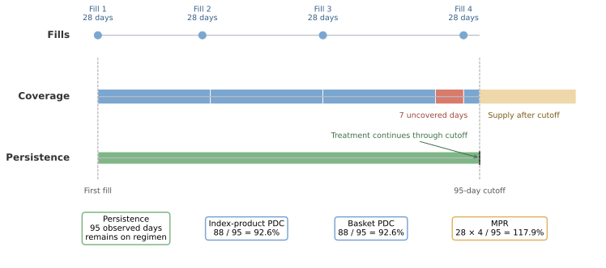
Figure 5.12. Persistence follows elapsed time on the initial regimen, PDC counts covered days within the window, and MPR counts all dispensed supply. Synthetic data.
5.4.1 Persistence: time until departure from the initial regimen
For this chapter, persistence starts on the first treatment fill that opens line 1. A switch, addition, restart after the allowable gap, or confirmed discontinuation is an event. Each event means that the initial regimen has ended. If observation ends while the allowable gap is still unresolved, the line is censored on the last day for which persistence can be established.
The Kaplan-Meier calculation from Section 5.3 applies again with a new event definition. Here, \(S(t)\) is the estimated probability of remaining on the initial regimen through day \(t\).
Listing 5.8: Report initial-regimen persistence with its risk set
import pandas as pd
out = "ch05_journey/assets/generated_outputs"
persistence = pd.read_csv(f"{out}/line1_persistence.csv")
for day in (60, 90, 113, 180):
row = persistence.loc[persistence.day.le(day)].iloc[-1]
print(f"day {day}: {row.survival:.1%} persistent "
f"(95% CI {row.lower_95:.1%} to {row.upper_95:.1%}); "
f"{int(row.at_risk):,} at risk")
day 60: 73.0% persistent (95% CI 71.4% to 74.6%); 1,776 at risk
day 90: 60.6% persistent (95% CI 58.6% to 62.5%); 1,128 at risk
day 113: 49.9% persistent (95% CI 47.7% to 52.0%); 701 at risk
day 180: 19.2% persistent (95% CI 16.2% to 22.4%); 50 at risk
The median time to departure is 113 days, the first day when estimated persistence reaches 50%. The 180-day estimate comes from a thin tail: only 50 of the original 3,415 patients remain in the risk set. The confidence interval reflects sampling uncertainty among the observed records, while the small risk set also warns the reviewer that the estimate depends heavily on a limited part of the cohort. The 90-day result, based on 1,128 patients at risk, is a stronger headline for this bounded data package.
Departure from line 1 has several meanings. A switch or addition shows continued treatment in a changed regimen. Confirmed discontinuation shows a gap beyond the 60-day rule. A single persistence curve combines these events because the estimand is time on the initial regimen. A stakeholder asking about time on any therapy needs a multistate analysis that preserves the separate treatment states.
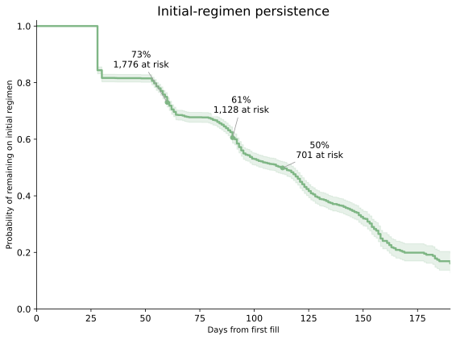
Figure 5.13. Estimated initial-regimen persistence falls from 73.0% at day 60 to 49.9% at day 113. The 701 patients still at risk on day 113 provide less evidence than the 1,776 patients at risk on day 60. Synthetic data.
5.4.2 Adherence: coverage during the observed window
Proportion of days covered, or PDC, measures adherence during a defined observation window:
The numerator counts each calendar day once when qualifying supply is available. The denominator starts on the first treatment fill and continues for up to 365 days, stopping earlier at the patient's follow-up end. This chapter requires at least 90 observable days so that 1 fill cannot dominate a short window.
For PAT00036, the window runs 95 days from 2024-09-28 through 2024-12-31. Four 28-day fills provide 112 dispensed days. The 2nd fill arrives 2 days early, so its supply starts after the prior fill is exhausted. The last fill contributes only 4 covered days before the study cutoff. The resulting supply covers 88 unique days:
Medication possession ratio, or MPR, uses the raw dispensed supply:
MPR exceeds 1 because supply extends beyond the window. PDC caps the numerator at the number of eligible calendar days and therefore stays between 0 and 1. Both measures describe claims-based possession. Filling a medicine provides evidence of available supply and cannot confirm ingestion or correct use.
Listing 5.9: Summarize the PDC distribution and compare product scopes
import pandas as pd
out = "ch05_journey/assets/generated_outputs"
index_pdc = pd.read_csv(f"{out}/adherence_index_product.csv")
basket_pdc = pd.read_csv(f"{out}/adherence_market_basket.csv")
bands = pd.cut(index_pdc.pdc, [-0.001, 0.2, 0.5, 0.8, 1.001],
labels=["0-<0.20", "0.20-<0.50", "0.50-<0.80", "0.80-1.00"],
right=False)
print(bands.value_counts(sort=False).rename("patients").to_string())
print(f"\nmean index-product PDC: {index_pdc.pdc.mean():.3f}")
print(f"median index-product PDC: {index_pdc.pdc.median():.3f}")
print(f"PDC at or above 0.80: {index_pdc.adherent_pdc.mean():.1%}")
changed = basket_pdc.pdc.gt(index_pdc.pdc).sum()
print(f"higher basket PDC than index-product PDC: {changed:,} patients")
pdc
0-<0.20 584
0.20-<0.50 1097
0.50-<0.80 581
0.80-1.00 418
mean index-product PDC: 0.445
median index-product PDC: 0.395
PDC at or above 0.80: 15.6%
higher basket PDC than index-product PDC: 36 patients
The PDC cohort contains 2,680 treated patients with at least 90 observable days after initiation. Its median index-product PDC is 0.395, and 15.6% meet the prespecified 0.80 threshold. The threshold is a reporting convention. A clinically meaningful level depends on the disease, product, dosing schedule, and outcome.
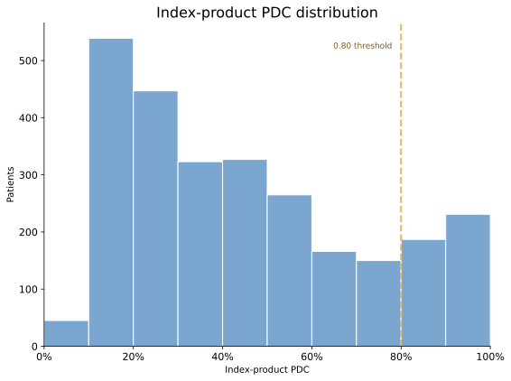
Figure 5.14. Most measured patients fall below the 0.80 index-product PDC threshold. The full distribution shows how far patients are from the threshold and avoids reducing the analysis to one pass rate. Synthetic data.
5.4.3 Choose the product scope for adherence
The product basket determines which covered days enter the PDC numerator. Index-product PDC counts supply for the product that started line 1. Market-basket PDC counts supply for any qualifying treatment for the condition. A patient who receives Roventra for 60 days and then Nexoral for 60 days in a 120-day window has an index-product PDC of \(60/120=0.50\) and a market-basket PDC of \(120/120=1.00\). The 2 results answer different questions: continuity on Roventra and continuity on condition treatment.
Only 36 patients have higher market-basket PDC than index-product PDC. Section 5.2 found only 28 patients who reached line 2, so the near-equality follows directly from the shallow treatment sequences in this synthetic package. A larger difference in real data would point to switching or add-on treatment and should be reconciled against the line table.
Table 5.6 summarizes the measurement choices after we have applied each one. The event or numerator defines what counts. The risk set or denominator defines who or which days contribute to the result.
Table 5.6. Persistence and adherence use different units and answer different medication-use questions.
| Measure | Business question | What counts | Comparison base | Patient-level output | Population output |
|---|---|---|---|---|---|
| Initial-regimen persistence | How long does the starting regimen continue? | Departure by switch, addition, restart, or confirmed discontinuation | Patients still known to remain on line 1 at each day | Time to departure or censored duration | Persistence curve and median time to departure |
| Index-product PDC | On what share of observed days was the starting product available? | Unique days covered by the starting product | Up to 365 observable days after the first fill | Percentage from 0% to 100% | Distribution and share at or above a stated threshold |
| Market-basket PDC | On what share of observed days was any condition treatment available? | Unique days covered by any product in the basket | Up to 365 observable days after the first fill | Percentage from 0% to 100% | Distribution across treatment changes |
| MPR | How much supply was dispensed relative to elapsed time? | Sum of dispensed days supply | Observable days in the measurement window | Ratio that can exceed 1.0 | Distribution or threshold summary |
5.4.4 Compare payer rates with uncertainty
The unadjusted payer summaries range from 13.2% to 18.4% at PDC of 0.80 or higher. A ranking alone would place PAY002 first and PAY004 last. Sample size and random variation determine how much weight that ordering deserves, so Listing 5.10 calculates Wilson 95% confidence intervals for each rate.
Listing 5.10: Add uncertainty to the payer adherence comparison
import pandas as pd
from statistics import NormalDist
out = "ch05_journey/assets/generated_outputs"
payer = pd.read_csv(f"{out}/adherence_by_payer.csv").query("payer_id != 'All'")
z = NormalDist().inv_cdf(0.975)
n, rate = payer.treated_patients, payer.adherent_pdc_rate
denominator = 1 + z**2 / n
center = (rate + z**2 / (2 * n)) / denominator
half_width = z * (rate * (1 - rate) / n + z**2 / (4 * n**2))**0.5 / denominator
payer = payer.assign(lower_95=center - half_width, upper_95=center + half_width)
print(payer[["payer_id", "treated_patients", "adherent_pdc_rate",
"lower_95", "upper_95"]].round(4).to_string(index=False))
payer_id treated_patients adherent_pdc_rate lower_95 upper_95
PAY001 313 0.1661 0.1290 0.2113
PAY002 332 0.1837 0.1457 0.2289
PAY003 334 0.1677 0.1315 0.2115
PAY004 349 0.1318 0.1003 0.1713
PAY005 350 0.1400 0.1075 0.1803
PAY006 336 0.1637 0.1280 0.2070
PAY007 331 0.1450 0.1111 0.1870
PAY008 335 0.1522 0.1177 0.1946
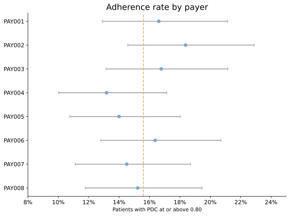
Figure 5.15. The payer confidence intervals overlap substantially, including the intervals for PAY002 and PAY004. The observed ranking provides weak evidence for a payer-specific difference. Synthetic data.
The generator contains no payer-specific adherence mechanism, and the intervals overlap substantially. This package therefore provides no clear evidence of a payer difference.
In real data, a payer difference would start an investigation while its cause remained unresolved. Formulary restrictions, refill-channel capture, days-supply conventions, case mix, benefit design, and follow-up length can all move the observed rate. Chapter 6 adds access evidence, and Chapter 11 covers adjusted comparisons.
5.4.5 Apply the measures to commercial decisions
The opening questions now have bounded answers. At day 90, 60.6% of patients remain on the initial regimen, leaving about 4 in 10 who have switched, added treatment, restarted, or met the discontinuation rule. Among 2,680 patients with at least 90 observable days, 15.6% have index-product PDC at or above 0.80. Product switching changes PDC for only 36 patients in this synthetic package. Raw payer rates vary by 5.2 percentage points, while overlapping confidence intervals provide weak evidence for a payer-specific effect.
These findings direct the next work. The day-90 persistence result sets the scale and timing of early departure. The PDC distribution locates refill coverage as a separate problem within the time patients remain under observation. The basket comparison identifies whether switching explains low product-specific coverage. The payer comparison determines whether market access needs a focused evidence review before anyone recommends intervention.
Table 5.7. Each finding should lead to a bounded commercial action.
| Finding in this package | Interpretation | Next analysis or action | Stakeholder use | Boundary |
|---|---|---|---|---|
| 60.6% persistent at day 90 | About 4 in 10 have departed the initial regimen by day 90 under the 60-day gap rule | Split departures into discontinuation, switch, and addition; review sensitivity to the gap rule | Brand analytics can define the size and timing of early departure | Claims do not reveal the clinical reason |
| 15.6% at PDC of 0.80 or higher | Most measured patients have substantial uncovered time for the index product | Locate refill gaps by week from initiation and compare against expected dosing | Patient services can examine refill support around the earliest recurring gaps | PDC measures available supply, not ingestion |
| 36 patients improve under basket PDC | Switching has little effect on the aggregate adherence result here | Reconcile those patients with line-2 records | Analytics can verify that the adherence and line algorithms agree | The synthetic journey has very few later lines |
| Payer rates span 13.2% to 18.4% with overlapping intervals | Observed payer variation is inconclusive | Check formulary status, days supply, capture, case mix, and adjusted estimates | Market access receives a focused evidence request | Raw payer rates do not establish a payer effect |
| 50 patients remain at risk at day 180 | The late persistence estimate rests on limited follow-up | Extend the data cutoff or choose a more mature index cohort | Data operations can define the next reliable refresh date | A narrow confidence interval cannot repair immature follow-up |
The stakeholder deliverable should contain the persistence curve with numbers at risk, the PDC distribution, the product-scope comparison, a payer table with uncertainty, and the exact measurement specification. The specification records the index event, product basket, 365-day maximum window, 90-day minimum observable window, refill carryover rule, 0.80 threshold, allowable gap, censoring rule, and data cutoff. With these fields visible, brand, patient services, and market access teams can distinguish a measured signal from a question that still needs data.
Persistence and adherence describe the treatment patterns observed in the available records. Comparisons among products, payers, or support programs require a separate design that addresses case mix, access differences, and incomplete capture before anyone attributes the difference to an intervention.
5.5 The Hub Pathway: Where Access Friction Lives
For a specialty product, the journey between the prescription decision and the first pharmacy fill runs through a hub: referral, benefits investigation, prior authorization, and shipment, with an abandonment exit at every step. Pharmacy claims capture the fill after these steps. The specialty-pharmacy file shows the intermediate path:
import pandas as pd
out = "ch05_journey/assets/generated_outputs"
print(pd.read_csv(f"{out}/sp_funnel.csv").to_string(index=False))
print()
outcomes = pd.read_csv(f"{out}/sp_abandonment_outcomes.csv")
pivot = outcomes.pivot_table(index="discontinue_reason", columns="outcome",
values="patients", fill_value=0).astype(int)
print(pivot.to_string())
stage patients share_of_referrals median_days_from_referral
Referral received 2597 1.000 0.0
Authorization approved 1958 0.754 5.0
Shipped 1836 0.707 10.0
Abandoned 722 0.278 4.0
outcome Later Roventra fill No further basket fill
discontinue_reason
Cost 236 7
Coverage 198 3
Documentation 218 5
Lost follow-up 26 0
Patient decision 29 0
The funnel includes only referrals between diagnosis index and follow-up end. Among the 2,597 post-index referrals, 70.7% reach shipment with a median of 10 days from referral, and 27.8% abandon. Of the 722 abandoned referrals, 707 later show a Roventra fill and 15 show no further treatment-basket fill before follow-up ends.
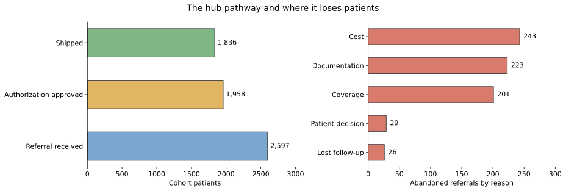
Figure 5.16. The hub converts 7 in 10 post-index referrals. Counts, conversion, and time belong together because a pathway can lose patients through delay as well as explicit abandonment. Synthetic data.
The reasons route the work: cost abandonment points to affordability programs, coverage to market access, and documentation to office support. The abandoned group also shows why a hub status is not always a final patient state. Most abandoned referrals in this synthetic file later show Roventra treatment, so the analyst should report both the hub outcome and the later claim outcome.
The broader journey table contains 52 patients with a pended pharmacy transaction and no observed treatment fill. Market access should reconcile those records against later claims, hub status, and channel coverage before classifying them as unresolved barriers. A missing fill may reflect an unresolved access problem, treatment outside the captured channel, or the end of observable follow-up.
5.6 Modern Extensions to Rule-Based Patient Journeys
This synthetic package contains 24 switches and 4 additions. Those records are enough to test the line rules and inspect patient traces. A larger claims or EHR study may support questions about recurring gaps, latent treatment states, common pathway shapes, or future event risk. Table 5.8 maps each question to a method that extends the rule-based foundation.
Table 5.8. Choose an extension for a specific journey question.
| Method | Question it can answer | Required evidence and validation | Where to start |
|---|---|---|---|
| Multi-state and competing-risk models | What is the probability of moving among initiation, switch, discontinuation, death, and other states over time? | Dated transitions, competing events, censoring rules, and enough events per transition | Putter et al., 2007 |
| Recurrent-event models | Which factors are associated with repeated refill gaps, hospitalizations, or restarts? | Repeated event dates, risk intervals, time-varying covariates, and within-patient dependence | Andersen and Gill, 1982 |
| State-sequence analysis | Which complete journey patterns recur across patients? | A common time scale, explicit state alphabet, distance rule, and cluster stability checks | TraMineR |
| Process mining | Where do hub pathways contain delay, rework, loops, or deviations from the expected route? | Complete event logs with case IDs, activity names, timestamps, and source-system coverage | Process mining in healthcare review |
| Hidden Markov and semi-Markov models | Which latent treatment state best explains noisy or intermittently observed records, and how long does that state persist? | Repeated observations, plausible state definitions, dwell-time assumptions, and out-of-sample state validation | Jackson, 2011 |
| Probabilistic phenotype inference | What is the probability that a patient belongs to the target clinical cohort? | Diagnosis, procedure, medication, laboratory, and note-derived features with validation labels | PheNorm |
| Standardized pathway analytics | Can the same cohort and pathway definition be reproduced across databases? | Versioned concepts, cohort logic, database mappings, and cross-database diagnostics | OHDSI Cohort Pathways |
| Longitudinal representation learning | Can a long patient record support prediction, matching, or segmentation? | Large longitudinal histories, a defined prediction target, temporal validation, and subgroup review | Med-BERT |
| Transformer trajectory models | Which distant diagnoses, visits, and medications help predict a later event? | Large coded sequences, stable vocabularies, time-aware splits, calibration, and interpretation checks | BEHRT |
| Time-to-event foundation models | Can one pretrained representation support several future event-time tasks? | Large event histories, task-specific censoring definitions, external validation, and calibration by horizon | MOTOR |
The business question should determine the extension. Multi-state models fit transition probabilities. Recurrent-event models fit repeated gaps. Sequence analysis and process mining fit pathway structure. Hidden-state models fit noisy or intermittently observed states. Representation models fit prediction, similarity, and segmentation tasks.
Each method still depends on the cohort, event definitions, observation window, and source coverage established earlier in the chapter. Model evaluation should include temporal validation, calibration, subgroup performance, sensitivity to coding and censoring rules, and a comparison with the rule-based baseline. The commercial deliverable should show how the additional complexity changes a decision. Model scores serve as supporting evidence for that decision.
5.7 Summary
The chapter opened with 3,193 apparent Roventra line-1 entries. A 180-day treatment washout found 395 continuing users among them, leaving 2,798 newly observed Roventra starts. That 14.1% correction changes launch uptake reporting and demonstrates how one journey rule can change a commercial result.
The analysis produced 6 reusable lessons:
- Define the cohort, index date, lookback, follow-up, treatment basket, and data cutoff before constructing a journey.
- Count completed treatment fills as exposure evidence. Preserve pended and reversed transactions as access evidence.
- Version the washout, starting-regimen window, allowable gap, addition, switch, restart, discontinuation, and censoring rules.
- Estimate treatment initiation with methods that retain censored patients and treat death as a competing event when death data are available.
- Use persistence for elapsed time on treatment and adherence for covered days within a fixed window. State the product scope and denominator with every result.
- Reconcile hub outcomes with later claims because an operational status may precede treatment observed through another record.
The reusable artifact is the journey evidence package written by run_analysis.py. Each reported metric should carry its cohort, time origin, event definition, observation window, rule version, denominator or risk set, uncertainty when applicable, and data cutoff. Those fields let a reviewer trace the commercial answer back to the records and rules that produced it.
5.8 Exercises
- Audit a false new start. Construct line 1 with a 0-day washout and a 180-day washout. Select 1 patient counted only by the 0-day rule, then print the therapy index and all completed treatment-basket fills in the prior 180 days. Explain why the earlier fill changes the commercial classification. See Section 5.2.
- Choose the adherence product scope. Join index-product and market-basket PDC, identify the patients whose values differ, and inspect the treatment products for the patient with the largest increase. State which PDC belongs in a brand continuity report and which belongs in a condition-treatment continuity report. See Section 5.4.
- Stress-test the data cutoff. Rebuild the cohort and line-1 results with the study end moved from 2024-12-31 to the raw data edge on 2025-01-31. Compare cohort size, discontinued share, and censored share, then explain why the less mature cutoff changes the result. See Sections 5.1 and 5.4.
Worked solutions are in exercise_solutions.ipynb. Each solution ends with the judgment the analyst should document for real data.
Chapter 6 takes the first-line product shares, payer differences, and coverage-related hub outcomes from this evidence package and tests how formulary position shapes the observed market.